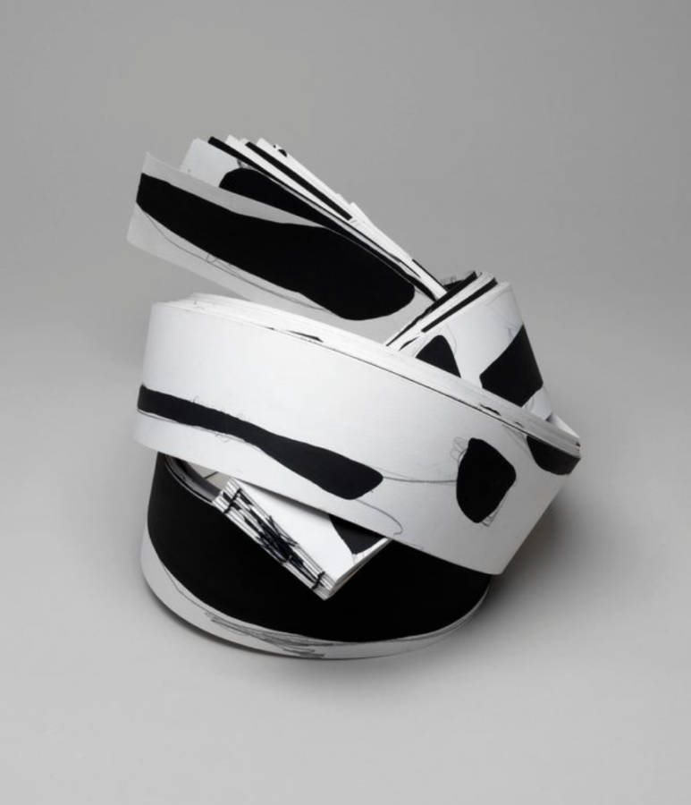

Yoonshin Park: Prompt and Prompted
Hyde Park Art Center, the renowned non-profit hub for contemporary art located on Chicago’s vibrant South Side, is proud to announce Yoonshin Park: Prompt and Prompted, an exhibition highlighting the artist’s, as well as her students’, experimental ways of creating artist books that push the boundaries of what books can be. On view from January 24-May 10, 2026, the exhibition offers hands-on experiences for the audience to make their own artist books on multiple dates throughout the duration. Both the exhibition and the public programs are free and open to the public.
An artist book is an artwork that reimagines or transforms the form, function, or concept of a book into an expressive medium. For more than two decades, Park has used artist books as an experimental form and conceptual space to expand what books can be. For Park, the medium offers freedom that invites alternative ways of living other aspects of life, and invites the audience to live their lives as expansively as Park defines artist books. This exhibition presents new works that further her exploration of artist books as spatial, symbolic, and participatory sites capable of engaging notions of memory, marginality, translation, and transformation.
More than a creator, Park is an arts educator of the medium. Since 2019, she has been teaching courses on artist books virtually through the Art Center’s Oakman Clinton School + Studios, and has found her practice of teaching to be as generative for her as it is for her students. The title of the exhibition refers to the reciprocal exchange that takes place in Park’s classroom. The exhibition includes artworks by 12 of Park’s students, including Kimberly Bailey, Miriam Bisby, Priya Deb, Devie Dragone, Bryne Hadnott, Rebecca Kelly, John Michael Korpal, Carol Lett, Camille Levi, Sumiah Salloum, Virginia Van Vynckt, and Max Washington.
Park shares how this presentation differs from past work: “This exhibition marks a shift in my practice from intimate, book-inspired gestures to spatial and communal forms, allowing me to explore how books can extend beyond the page. I hope visitors experience the work as an invitation to engage with their own stories and with spaces—both in books and in the gallery—in new ways, noticing how meaning and connection can emerge through shared interaction.”
Free public programs include the following:
Wednesday, January 28, 1pm Artist-led workshop
Wednesday, February 11, 1pm Artist-led workshop
Thursday, February 19, 6pm Artist talk with Yoonshin Park and curator Mariela Acuña